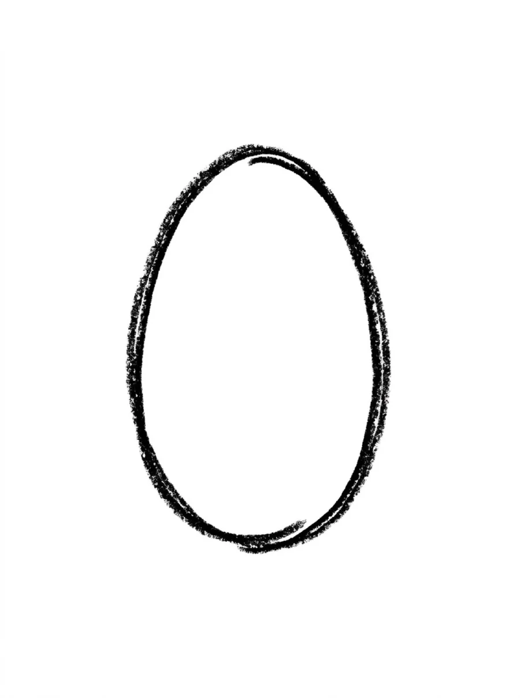
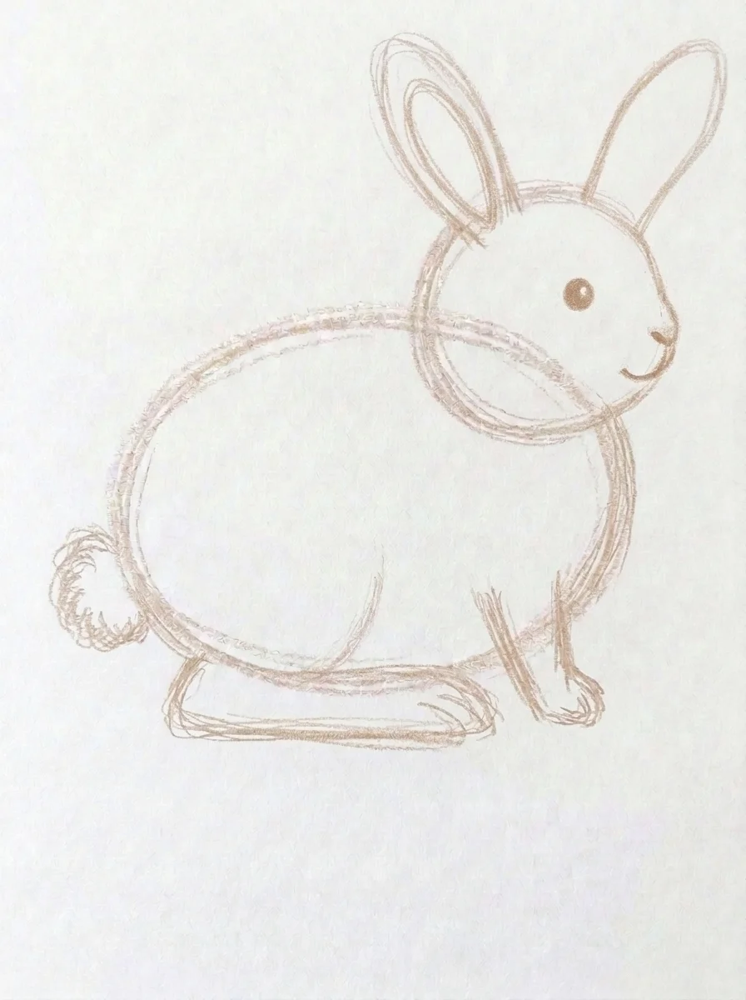
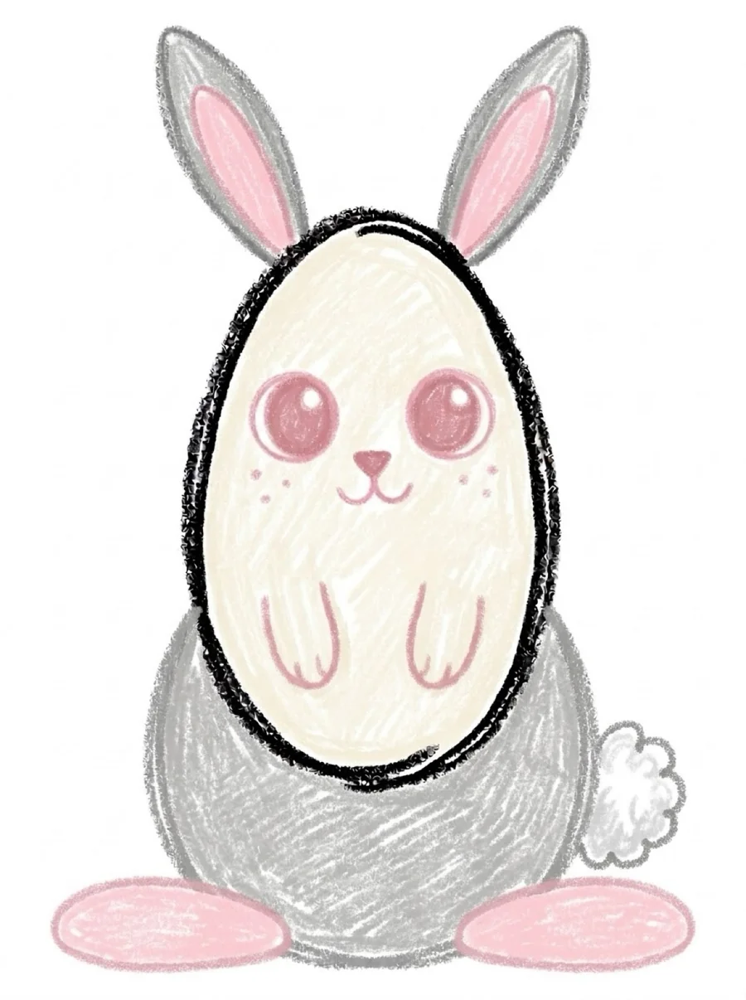

Bunny Drawing for Kids How to Draw a Bunny in 6 Easy Steps
Bunnies are basically two ovals and the world's most recognizable ears. The long ears do so much visual work that everything else can be simple — which is why this is the drawing kids finish fastest and show off most.
Quick Answer
This free step-by-step tutorial shows kids how to draw a bunny in six easy steps: a wide body oval, a round head, long ears, legs and a fluffy tail, a cute face, and color. Download the printable PDF, grab crayons, and follow along together. Made for ages 4 and up — no signup needed, just print and draw.
At a Glance
- Subject: How to draw a bunny
- Ages: 3+
- Steps: 6 steps
- Time: ~10 min
- Difficulty: Easy
- Supplies: Paper, crayons
✏️ How to Draw a Bunny: Step by Step
One step per box — draw each new part in a different color so kids can see exactly what changed.
Step 1: The Body

Draw a big oval lying on its side for the bunny's body — wider than it is tall.
Step 2: The Head

Draw a round circle at the front of the body for the head, overlapping the body a little so they join.
Step 3: Long Ears

Draw two long ears on top of the head, leaning back a little — nice and tall!
Step 4: Legs and Tail

Draw one front leg under the head, one big long foot flat along the bottom, and a small fluffy circle tail at the back.
Step 5: The Cute Face

Add one round dot eye, a tiny nose at the very front of the head, a small smile curve, and an oval inside one ear.
Step 6: Color It In

Color the bunny light gray, the tail white, and the inner ear and nose pink. Your bunny is done!
📊 Bunny Drawing by Age
Every age can join in — just adjust the job.
| Age | What they can do | Tip |
|---|---|---|
| 3–4 | Trace the body oval and the long ears | Ears are the fun part — let them make them extra long |
| 4–5 | Draw the body, head, and ears with help | The face is just a dot, a tiny nose, and a smile — practice the smile first |
| 6+ | Draw the whole bunny solo | Challenge: draw the bunny munching a giant carrot |
🖨️ Download Your Free Bunny Drawing Printable
The printable lays out all 6 steps one per box, big enough for little hands — kids draw right alongside each step.
⬇️ Download Free Printable 🖨️ Print🎁 Free printable for ages 3+
More Drawing Pages
Tap any picture to open its tutorial and draw along step by step.


🐰 Carrot Patch Story
Draw your bunny next to three triangle carrots with green tops, then add a sun and grass. Suddenly it's not a bunny drawing — it's a story. Ask your kid what the bunny's name is and what happens next. Named characters get drawn again and again.
🐰 Bunnies in the Garden
Whether you call it a bunny or a rabbit, it is the same animal — 'bunny' is just the affectionate nickname, the way 'doggy' is for a dog. Wild rabbits dig burrow neighborhoods called warrens and come out at dawn and dusk to graze, ears swiveling at every sound. A rabbit that is joyful and feeling safe sometimes does a binky: a sudden leap with a twist in mid-air, purely for the fun of it.
Gardeners have mixed feelings about rabbits, because a rabbit reads a vegetable patch as a salad bar. Rabbits eat grass and hay all day long, and their front teeth grow their whole lives to keep up with the chewing. Ask your child what this bunny has its eye on — the answer is usually already growing in the picture.
What You'll Need to Draw a Bunny
Pink for the inner ears and nose, plus gray, white, or brown for the body. White crayons don't show on white paper, so if your kid wants a white bunny, use light gray paper instead — it looks great and the white details pop. A pink crayon with a fine tip helps for the small nose and mouth.
What They're Learning
Bunny ears are essentially long ovals — stretching a familiar shape into a new proportion teaches flexibility with shapes. The fluffy tail (a circle with zigzag edges) shows how texture changes a basic shape. Small features like the tiny nose and smile also demand a light touch, which is excellent fine motor control practice for ages 4 to 6.
Make It Yours
Give your bunny long eyelashes for a fancy look, or buck teeth for a silly one. Draw it holding a carrot, sitting in grass with flowers, or wearing a bow tie. An Easter version with decorated eggs around it is an obvious seasonal win. Kids can also try a jackrabbit with extra-long ears and big back feet.
🛒 Our Favorite Drawing Supplies
These are the supplies we reach for in our own home — washable (because kids), quality paper, and enough colors to avoid fights.
As an Amazon Associate, MomYouNeedThis earns from qualifying purchases — at no extra cost to you.
💡 Bunny Drawing Tips for Parents
The ears are the whole battle on this page — short or pointy ears turn the bunny into a bear. Say the Fixes section's rule out loud before step three starts: ears long and tall. If the body oval itself wobbles, offer a plate or a jar lid to trace for the first few tries; the page is explicit that there is no rule against it.
The head circle is the other sticking point — it should overlap the body a little so the bunny looks joined up, not like a balloon floating beside it. And if the head comes out bigger than the body, don't restart: declare a baby bunny and keep going.
📖 Give Your Bunny a Story
Bunnies in stories are small, quick, and underestimated. Is yours the warren's fastest runner, a garden thief with no regrets, or the shy one the others send on the important errand? A dictated sentence or two under the drawing sets the bunny's reputation, and reputations invite sequels — especially at Easter.
The carrot tutorial draws this bunny's favorite thing in the world. One page for the bunny, one for the prize: the pair tells a complete story before a single word is written, and the caption can argue about who gets there first.
🐰 Easter Bunny Drawing
An easter bunny drawing is the classic spring picture: a bunny beside a basket of eggs. Start with the bunny tutorial on this page, then add a basket shape in front of the bunny and a few egg ovals inside. An easter bunny drawing is really just the bunny plus a basket.
The eggs are the fun part of an easter bunny drawing: color each egg a different bright color, and add stripes or dots. Kids love deciding which egg gets which pattern.
Follow the bunny steps, add the basket and eggs, and you have an easter bunny drawing. It makes a wonderful Easter card.
See free bunny printable for more. More long ears await in how to draw a rabbit and the springtime how to draw an easter bunny.
🐰 Where a Cute Bunny Drawing Goes Wrong (and How to Fix It)
Most bunny drawings that 'don't look right' go wrong at the ears. Ears drawn short or pointy turn the bunny into a bear, so remind your child the ears should be long leaf shapes with rounded tips, leaning back a little. If the body oval wobbles, trace a plate for the first few tries; there is no rule against it. Parents asking how to draw a bunny easy enough for a preschooler usually find the ears are the whole battle: get them long, and the rest forgives almost anything.
The head is the other sticking point — it should sit at the front of the body and overlap it a little. A head floating separate from the body looks like a balloon on a string. Watch the feet, too: the big back foot should lie long and flat along the bottom — bunny feet are famously big, so make it longer than feels sensible. And draw the fluffy tail at the very back of the body where everyone can see it — from the side, the tail is the bunny's finishing touch.
Follow this bunny drawing step by step and fix as you go rather than starting over — erasing teaches a child their first try failed. When the cute bunny drawing is colored in, extend it: a carrot patch, a row of grass, or a second, smaller rabbit drawing beside the first turns one picture into a scene. That is how to draw a bunny easy and keep a beginner coming back — and a bunny drawing step by step they have rescued themselves is the one they show everyone.
❓ Bunny Drawing FAQs
What is the easiest way for a kid to draw a bunny?
Start with a big oval lying on its side for the body, then a round circle at the front for the head. Add two long ears, one front leg, a big back foot, and a fluffy tail, then a dot eye and a tiny nose. The ears make it instantly recognizable.
What age can kids start learning to draw a bunny?
Most kids can draw the body oval and long ears around age 4 with help, and the full bunny solo by 5 or 6. The long ears are the easiest 'wow' shape in kid drawing.
What supplies do we need to draw a bunny?
Paper and crayons or markers — plus pink for the inner ears. The free printable PDF lays out all six steps one per box so kids can draw right alongside each step.
Is the bunny drawing printable really free?
Yes — every printable on MomYouNeedThis is 100% free to download and print. No signup, no payment, just tap the download button.
Is a bunny drawing the same as a rabbit drawing?
Yes — bunny is the nickname and rabbit is the animal, so the drawing is the same either way: long ears, round body, fluffy tail. Whichever word your child searches with, this tutorial is the one they want.
How do I print the bunny drawing tutorial?
Open the PDF and print at 100% scale (not 'fit to page') so the drawing boxes stay big enough for little hands. The printable is designed to stay large — never shrunk to force a fit. The print button opens the full-size page in a new tab if you prefer to print from there.
What is the easiest way to learn how to draw a bunny easy?
Start with the body. A big side oval plus a round head reads as 'bunny' as soon as the long ears go on, which is encouraging for beginners. The tutorial on this page then adds the legs and tail, the face, and color in three more short steps.
How does a bunny drawing step by step tutorial work?
Each of the six pictures shows the bunny so far, with the newest part drawn in a fresh color. Your child copies just the colored part, checks it against the picture, and moves on — one small, clear job at a time.
How do you make an easter bunny drawing for kids?
Follow the bunny tutorial, add a basket beside the bunny, and fill it with colorful egg ovals. That is an easter bunny drawing.
What makes a cute easter bunny drawing?
Use round shapes, dot eyes, a tiny pink nose, and pastel egg colors. Round shapes and pastels are what make a cute easter bunny drawing.
What makes this cute bunny drawing good for beginners?
The whole cute bunny drawing is built from ovals and circles: a wide oval body, a round head, and long oval ears, so there are no tricky shapes to copy. Every step adds one small thing, and the long ears make the bunny recognizable right away, which keeps beginners encouraged.
📚 Keep Exploring
- ✏️ All 76 Drawing Tutorials 76 free step-by-step drawing tutorials for kids.
- 🐾 Animal Coloring Free printable animal coloring pages for little learners.
- ✏️ Drawing Practice Free printable drawing pre-writing worksheet for toddlers.